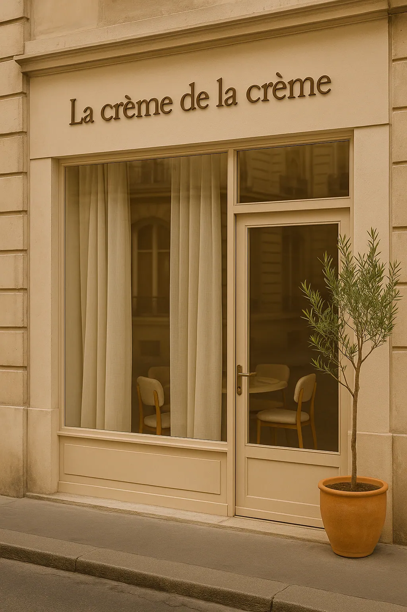
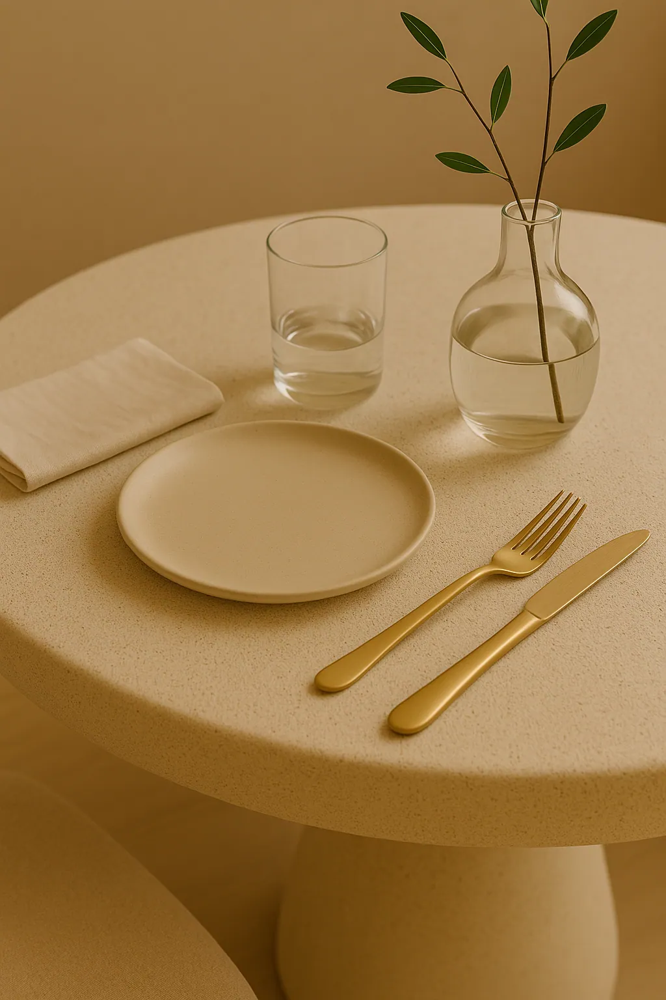
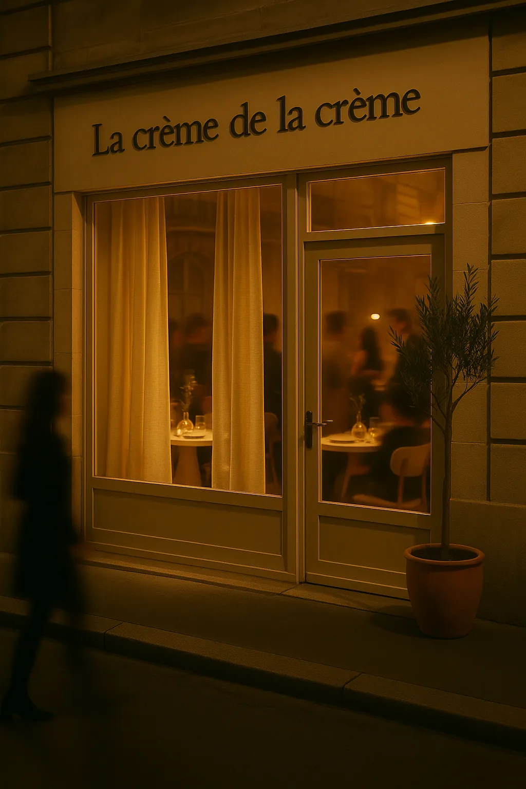
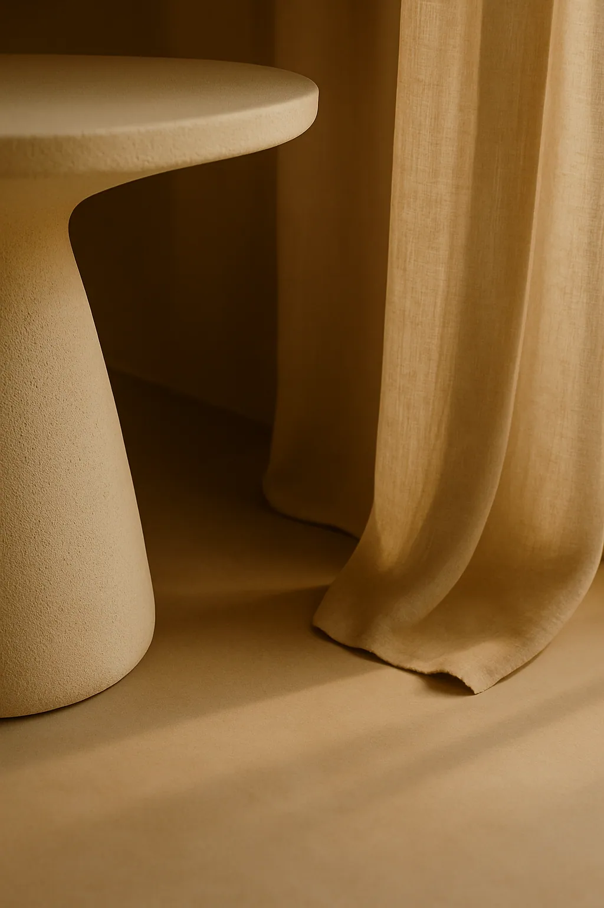
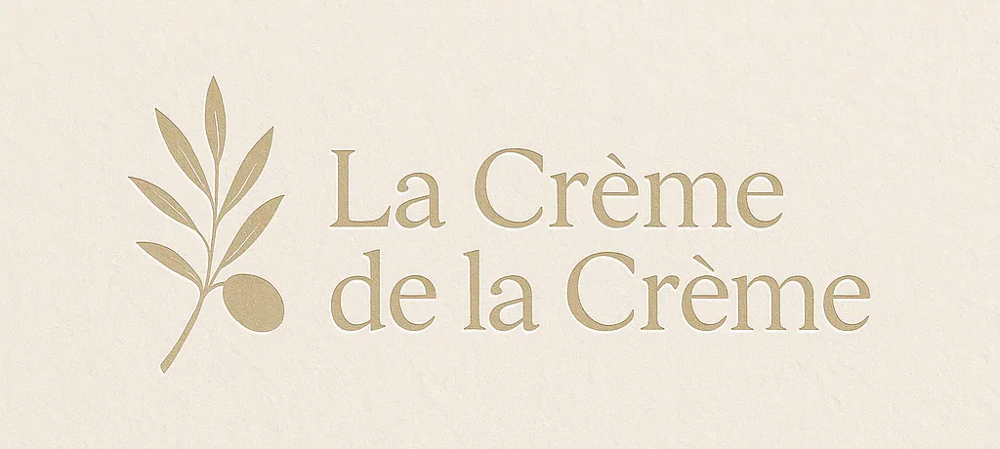
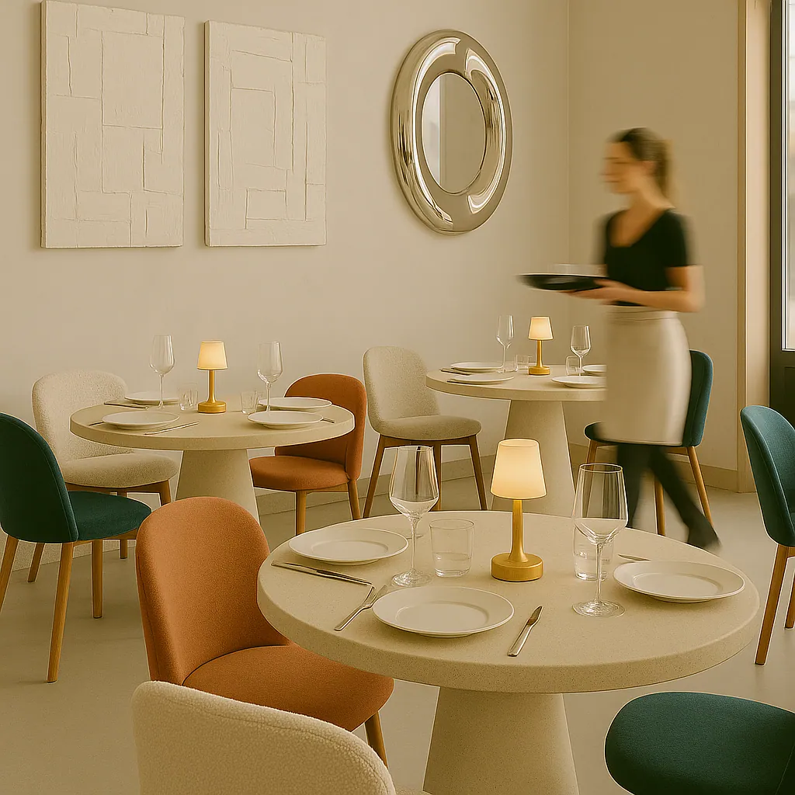
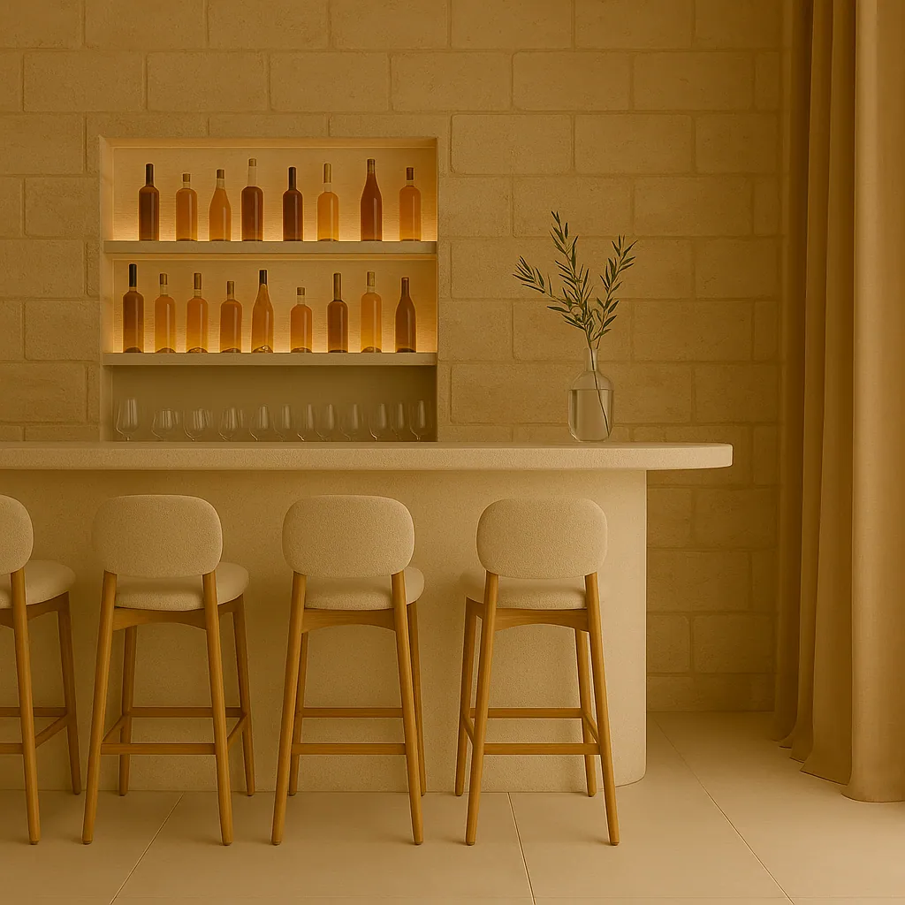
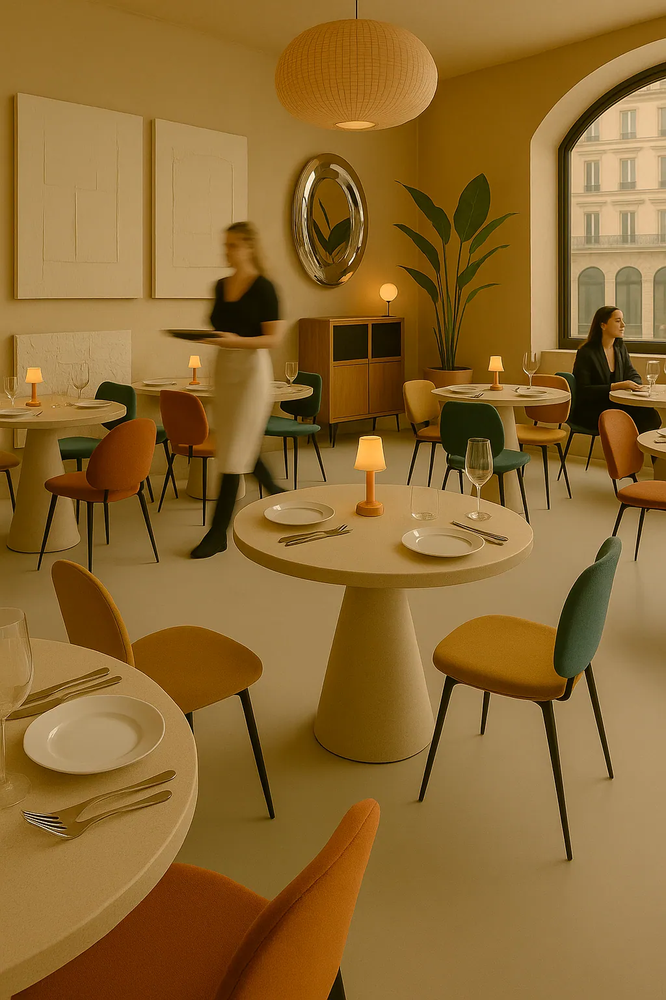

Paris
Un projet de restaurant à l'état de conception. Le parti pris : un intérieur neutre mais profondément chaleureux, bâti sur un dialogue de matières — chaux, béton ciré, formes organiques. Le principe des tables sur mesure que je dessine appliqué à l'ensemble d'un espace : chaque surface est une décision, chaque texture porte la température du lieu. Rien n'est décoratif. Tout est matière.








La Crème de la Crème n'est pas un lieu construit : c'est un projet complet de restaurant, dessiné jusqu'à l'identité de marque. Ce statut change la nature du travail. Sans site existant à composer, tout part du programme — comment on entre, où l'on s'assoit, ce que l'on voit depuis la rue le soir — et chaque décision se juge sur sa cohérence plutôt que sur sa faisabilité immédiate.
Le parti pris tient en trois matières : la chaux sur les murs, le béton ciré au sol et sur les plateaux, et le bois clair pour les assises. Aucune ne cherche à briller. Ensemble, elles donnent un intérieur neutre de couleur mais chaleureux de texture — exactement l'inverse d'un décor de restaurant qui compenserait par l'accumulation.
Les tables rondes sont dessinées sur mesure : un plateau circulaire posé sur un pied conique, d'une seule matière, sans arête vive. C'est la pièce qui porte le projet — elle donne le rythme de la salle, autorise les configurations à deux comme à six, et impose une forme organique qui contredit la géométrie stricte du lieu.
Le projet descend jusqu'à la rue : une devanture crème, un lettrage sobre, un olivier en pot pour seule enseigne végétale. Le soir, la salle éclairée devient l'enseigne elle-même. Le logo et l'identité visuelle ont été dessinés dans le même mouvement, de sorte que la carte, la façade et le mobilier appartiennent à une seule écriture.
La Crème de la Crème rejoint les projets commerciaux et tertiaires conduits par John Rozenblum, aux côtés du showroom du Marais.
Ce projet fait partie des réalisations de design d'intérieur à Paris de John Rozenblum. Pour discuter d'un projet similaire ou d'une rénovation sur mesure, prenez contact.
Un projet ?
Chaque projet commence par une conversation. Partagez votre vision — je m'occupe du reste.
Prendre contact